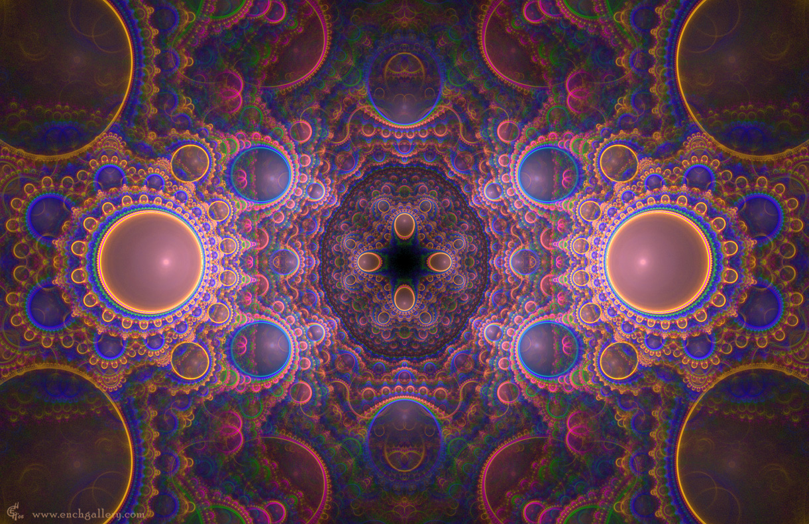

22 Кластер
Вечером я ехала с работы, глядела в окно на огни города и общалась с невидимыми существами:
- Мы слишком долго тебя мучили и ты нам доказала, что мы можем взять тебя с собой. Сегодня мы возьмем тебя в наш мир. Ты можешь быть одной из нас. Мы тебя много раз спрашивали - хочешь ли ты попасть в наш мир? Будет ли там тебе хорошо? Но ты согласилась, даже не зная, куда ты хочешь попасть. Верно?
- Да, так и есть. Я просила кота в мешке. Сначала я поверила Эдику и решила, что ваш мир - другая планета.
- А теперь?
- А теперь я больше всего желаю узнать, что же это такое.
- Наш мир - это совсем не то, что ты себе представляешь. Мы можем приходить туда в любое время и оставаться там так долго, как пожелаем. Для нас могут за ночь пройти месяцы и годы. Наш мир - это кластер.
- А где он находится?
- Тебе сейчас сложно это осознать. Можешь называть это другим слоем, ментальным полем, иной мерностью, хотя это не совсем так. Мы не питаемся кровью в буквальном смысле. Мы питаемся книгами, мыслями других людей. Да-да, мы те самые жуткие вурдалаки, мы заставляем их думать, как заставляли тебя. Мы должны постоянно что-то изучать, проделывать в уме сложные расчеты. Этому мы тебя учили. Теперь ты объединишься с нами. Ты уже, наверное, поняла, что с тобой разговаривает наш кластер - разум множества существ, который ты приняла за суперкомпьютер. Отчасти так и есть. Когда ты будешь спать в фазе медленного сна и будешь относительно свободна - твое подсознание тоже будет участвовать в работе кластера. Ты сама этого хотела. Да, ты будешь тратить ресурсы, но взамен ты получишь доступ к нашему кластеру! Многое, что тебе про нас говорил Эдик - отчасти правда. Инициация кончается смертью человека и рождением вампира - рождением ментата.
При этом я увидела, как слово "вампир" преобразовалось, буквы трансформировались и преобразились. Получилось слово “ментат”, с точки зрения "топологии" тождественное предыдущему.
В первый момент я ощутила разочарование. Боже, как же они живут, если в их мире нет ничего, кроме мыслей! И во что же я ввязалась?
Я уже представила себе пилота Пиркса, который всю жизнь лежит в депривационной ванне, не имеет возможности видеть и слышать, лишь мыслит, мыслит...
Может, им надо помочь? Разве мне жалко для несчастных существ отдать частичку своего времени - пусть они тоже через меня получат возможность увидеть, услышать, почувствовать, прожить...
Мне показалось, что кто-то беззлобно посмеялся над моими мыслями:
- Ну не надо так... За сочувствие спасибо, конечно, но у нас совсем не так плохо, как тебе кажется. И мы тебя не обманули - наш кластер действительно способен создавать физические миры, по качеству неотличимые от того, в котором ты живешь. От этого они не становятся менее реальными. Кто тебе сказал, что тот мир, в котором ты живешь сейчас - не есть результат работы ментального кластера? И ты сможешь приходить в эти миры, оставаться там с нами сколь угодно долго.
Я была счастлива. Внутри себя я понимала, что это - правда, что меня не надо будет никуда тянуть - я уже фактически пришла в этот мир. Мой мозг мне выдал это умозаключение, я уже не искала подтверждение у кластера.
- Мы ведь уже общаемся! Передаем тебе мыслеобразы, изображения, тактильные ощущения, звуки, запахи. Разве ты не заметила? А те сны - которые ты видишь, в которых осознаешься и сама пытаешься творить новые формы...
- Да, я ведь часто попадаю в сны, абсолютно не отличимые от этого мира. Ищу подвох и не нахожу. Каждая деталька, каждая прожилочка на листе дерева выглядят настолько реалистичными...
- Ну и что ты тогда испугалась? Значит, у нас уже всё есть. Осталось только отшлифовать немножко.
Ментаты.. вампиры.. архитекторы миров.
Затем услышала странную фразу:
- Мы тебя забываем...
- Это как так? - спросила я, - почему?
- Те, кто вели тебя раньше, тебя забывают. Перестраиваются связи внутри ментальной сети. Увы, но это всегда так происходит. Как однажды ты забудешь того, кого приведешь внутрь.
- Но зачем разрывать связи, забывать? Что это значит?
- Понимание придёт позже. Потерпи.
Одно меня мучало: когда же наступил тот самый момент смерти? И был ли он?
Ночью мне сказали выспаться. Что-то предстояло.
Действие началось под утро.
Возникло сильное ощущение близкой смерти. Происходящее было действительно ужасно, но вместе с тем - невероятно притягательно.
- Это - смерть?
- Мы не знаем, что такое смерть. Ты уже поняла, что тебе вовсе не нужно было просить нас переместить тебя на другую планету. Ты уже видишь, как мы словами нашего языка строим наши совместные сны и таким образом можем создать любую планету. Даже тот мир-планету, о котором рассказывал Эдик. Но ведь это, по сути, почти ничего бы не изменило. В нашем понимании, ты бы никуда не переместилась, а осталась бы все на том же месте - на том же уровне сознания.
- Я потешила бы своё эго, плюс, я бы успокоилась, увидев, что вы сдержали своё слово.
- Но ты все равно осталась бы тем, кем была раньше.
- Верно.
- Ты сама пришла к тому, что тебе нужно было Новое Качество. Пришло время Эволюции. Ты не могла оставаться такой, как раньше - чувствовала клетку и выбраться из нее могла только посредством качественного скачка. Мы сразу тебе сказали - мы не можем тебе дать ничего, что не имеем сами. Тогда ты попросила нас сделать тебя вампиром как мы. Мы дали тебе новое качество. Является ли оно смертью - мы не знаем. Точнее, знаем, но не знаем, как тебе это объяснить, это совсем иные категории, нежели те, к которым ты привыкла.
- Понимаю.
- Ты совершила ужасную ошибку. Ты доверила свою жизнь тем, о ком ничего не знала. Ты считала нас друзьями детства, поскольку много лет приходила в этот лес. При этом, действительно ли мы тебя воспринимали близким существом, знать ты не могла. Мы тебе уже показали, что могли сделать с тобой все, что угодно.
Я мысленно кивнула. Уровень волнения возрастал, сердцебиение учащалось.
Что происходит? И вновь эта странная музыка, словно мягкий перезвон колокольчиков.
- Что происходит?
- Может, что-то уже произошло?
- Что?
- Может, это мы должны тебя спрашивать - что происходит? Скажи нам, наконец-то. Что случилось? Может, это ты что-то натворила? Что-то провела над собой?
- Я не понимаю!
- Мы учили тебя формулировать фразы. Мы тебе показали, что часто можно сделать абсолютно неверный вывод, если пропустить частицу "не".
- И что?
- А ведь твое подсознание может не улавливать эти частицы. Ты хоть понимаешь, что ты ему внушала столько лет? Ты хоть понимаешь, что ты тогда сказала, на даче, в ту ночь, когда прошел поток энергии? Вспомни! Ты сказала, что согласна умереть ради трансформации. Ты как всегда бросила фразу не подумав, но вложила в нее всю силу... ты хоть понимаешь, что ты натворила тогда? Или что ты могла натворить?
У меня началась паника, я сжалась и задрожжала.
- Ты хоть понимаешь, что могла в ту ночь собрать все силы и послать подсознанию сигнал о смерти? Мы тебя столько учили составлению фраз, показывали, что бывает при неверном их восприятии.. теперь ты уже и сама все понимаешь. Ты согласилась на смерть. Поэтому мы пришли. Извини, но это правда, что про нас говорят - на инициации мы убиваем людей. Но только если получаем от них согласие.
- Но ведь я же жива! - воскликнула я в отчаянии
Ощущение смерти было совсем рядом, я теряла сознание... это было ужасно! я чувствовала, что иду по очень тонкой грани, вишу на волоске.
- Физически тело живо, но жива ли ТЫ? Что с тобой произошло? Ты и сама уже этого не понимаешь... никогда! Никогда в жизни больше не совершай эту ошибку
- Не буду! Я все поняла уже, хватит!
- Тогда мы не могли выполнить твою просьбу и дать тебе те уникальные способности, о которых ты просила, когда думала о трансформации. Это могло бы быть для тебя слишком опасно. Поэтому мы сами решили предложить тебе другой вариант, который тебе понравился гораздо больше. Мы подменили твою просьбу. Мы предложили тебе идею о том, чтобы ты пришла в наш мир. Ты за неё зацепилась.
- И были абсолютно правы! Это действительно новое качество! Спасибо вам! Вы придумали намного лучше, чем я.
- Тогда мы не спросили у тебя разрешения, поскольку ты все равно нас не понимала. Сейчас мы спрашиваем тебя разрешение подменить её. Ты знаешь, для нас время течет иначе.
- Конечно можно! Мне не нужно сверхспособностей. Я хочу прийти в ваш мир.
- Хорошо. Только перед этим скажи: можно мы и дальше иногда будем подменять твои просьбы, когда это необходимо? Доверишься нам?
Я колебалась.
- Хорошо. Я согласна. Вы правы - я сама иногда не понимаю, чего прошу.
- Тогда гляди. Это - наш мир...
Передо мной возникло удивительное изображение кластера. Было ощущение, словно меня окутывали всполыхи неводомого огня. Кластер напоминал хитросплетенную грибницу или нейронную сеть. Я завороженно смотрела на темно-красные и золотистые сплетения.
- Это наш мир. Единая кровь. Единая жизнь. Наш мир принимает тебя. Готова идти?
- Да.
В этот момент ощущение смерти усилилось, вокруг все замерцало, задребежжало. Сердцебиение сильно участилось, я испугалась. Сознание уходило. Во рту чувствовался странный привкус. Почему?!
В этот момент я услышала слово: "ЖИТЬ".
Кто его произнес?
- В нашем мире мы дружны, мы полностью едины. Мы могли тебе дать только то, что имеем сами. Наш мир - прекрасен, он - вне времени. Наш мир - это СМЕРТЬ. Идём?
- Нет! - кричу, - я не хочу умирать! Я не пойду туда! Я хочу ЖИТЬ!
Ощущение смерти отступило.
- Мы долго думали и искали способ, чтобы взять тебя к нам. Забрать тебя полностью с собой мы не могли, ты не смогла бы жить в нашем мире.
- Но ведь об этом не шло речи.
- Но мы нашли способ и забираем тебя с собой.
Я увидела, как на узле грибницы появилось яркое сияющее плодовое тело.
- Мы долго думали и поняли, как привязать тебя к нам, соединить с нашим миром.
Кластер замерцал. Я видела его перед собой с открытыми глазами.
- Узлы на дереве - это "мы-структуры", а плодовое тело - это "я структура".
Как я поняла, в моём подсознании появилась "мы-структура", часть кластера, которая имела доступ к его информации, но была хранителем тайны, а в сознании была "я-структура", которой мы-структура будет открывать то, что необходимо.
- А все остальные в кластере так же имеют я-структуры, плодовые тела, или я одна так привязана?
Ответа не было. Я уже поняла, что он может быть любым.
- Мы-структуры хранят нашу тайну.
- В чем заключается тайна?
- В том, как устроен наш мир, что внутри кластера
- Но ведь это значит, что я при всем моем желании не могу выдать нашу тайну! Ведь я же сама не знаю, как он устроен. А кластер сам об этом знает?
- Может быть. А может, и нет. Ты же уже поняла, что разницы между нашими сигналами "да" и "нет" нет никакой. У тебя нет критерия оценки правильности наших слов, так зачем тебе два сигнала? Давай мы объединим их в один?
- Это логично.
- Мы оставляем только сигнал "да". Только "ЖИТЬ". Жизни - да! Это та самая нить, которая связывает твои я-структуру и мы-структуру. Нам - только "да". Ведь твоё да - это твоя жизнь.
В этот момент все звучало для меня как единственная возможная истина.
- Семье - только "да", - повторила я за ними.
- Убираем между нами "нет"?
- Убираем.
- Значит, мы идём?
Передо мной вновь возникло чёрное кольцо.
- Нет! - вскрикнула я
- Но теперь только один сигнал. Нам всем - только "да"...
- Что же мне делать...?
- Доверься нам. Сделай то, что ты сделала в самом начале, хотя не должна была это делать. Ты пришла в лес и доверила нам свою жизнь, хотя ещё тогда ты не понимала, что творишь. И мы откликнулись на твою просьбу. Мы тебя пытались предупредить, но ты не хотела услышать. Теперь мы берём тебя с собой, как ты и просила.
- Я жить хочу! Пожалуйста!
- А к чему ты вернёшься? Там ты уже была. Ты все равно продолжишь искать новое качество. Ведь ты же сама не могла оставаться той, кем была.
- Я найду! Только оставьте меня в живых!
- Это то, чего ты так просила! Это наш мир!
Сияющее кольцо с чернотой внутри вновь вспыхнуло.
Я отстранилась, я физически не могла в него пройти, возник животный ужас и инстинкт самосохранения мне не позволил это сделать.
- Прошу вас!
- Вот видишь... Вчера мы тебе показали, что есть нерешаемые задачи, которые ты сама не можешь решить. Иногда есть необходимость попросить семью. Теперь ты видела, что какие бы мосты в междумирии ты не строила, ты все равно не способна прийти к нам сама. Ты не пройдешь сквозь это кольцо. Поэтому мы сами тебя сквозь него проведем, чтобы объединить кольца наших миров.
Это было ужасно. Я думала, если меня сейчас протащат через это кольцо, я сойду с ума
- Не бойся. Мы всегда закрываем этом финальный момент от всех инициатов. Мы проведем тебя, но ты не будешь об этом помнить, поскольку это действительно ужасно. На инициации ты нас просила показать тебе, как на самом деле происходит смерть и перерождение. Мы тебя предупреждали, что лучше этого не видеть, что это - ужасный опыт, но ты сама нас попросила. Поэтому мы показываем тебе смерть, закроем лишь один миг. Как видишь, мы попросили разрешения изменять твои просьбы. И эту просьбу мы не исполнили, хотя могли бы и исполнить и провести тебя через кольцо в сознании.
- Не надо! Пожалуйста, не исполняйте эту просьбу, не делайте этого!
- Как скажешь.
Кольцо исчезло. Ощущение смерти начало отступать.
- Мы раньше не могли тебе объяснить, что есть наш мир. Ты хотела прийти в физические миры, где сможешь все посмотреть, потрогать. Поэтому мы предложили тебе иную работу. Хотя тогда ты решила, что тебя снова обманывают. Ты уже понимаешь, что между нами есть только "да". Мы не причиняем боли друг другу, поэтому каждый делает то, что ему хочется. Критерий - внутри тебя.
- Но в таком случае как же моя деятельность будет полезна семье?
- Мы же уже получили согласие подменять твои желания. Эрго, ты будешь делать все, что хочешь, но захочешь делать то, что полезно Семье. Ведь твоё подсознание привязано к кластеру.
- Понимаю...
- Мы предложили тебе два варианта работы: работать с людьми на яву, приводить их к нам. Либо работать с ними во сне. Ты выбрала второй вариант, как мы и ожидали. Ты замкнутая, плюс ты хочешь посетить череду иных миров. Более того, ты хочешь создавать их. Ты найдешь их в снах людей, сможешь сама создавать реальности. И от этого они не станут менее реалистичными. Ведь ты уже поняла, что даже твоя текущая локация может быть совместным сном многих людей и чем больше людей держат локацию - тем более она устойчивая.
- Понимаю.
- Мы выяснили, что тебе нужны не просто локации, а такие где есть отличные от тебя живые существа.
- И ещё мне хочется, чтобы в текущей локации мне за мои действия по возможности ничего не было. Хотя я уже поняла, что даже во сне, даже в самом неосознанном сне, я все равно должна брать на себя ответственность за все свои поступки.
- Это понятно. Более того, мы из тебя вытянули глубоко запрятанное желание управлять другими. Поэтому и нашли для тебя этот вариант.
- Но я не хочу просто так посещать сны людей и оказывать на них воздействие. Мне нужно, на самом деле нужно, чтобы это было полезно всем нам. Не хочу делать это только для себя!
- А вот теперь ты подошла к сути... Ты сама хочешь работать на благо нашей семьи. Ты боялась, что мы тебя заставим это делать. Однако... Как видишь: здесь могут быть любые интерпретации, но ведь ты сама этого хочешь! Ты же довольна?
- Да! Это действительно то, чего я хочу! Переходить в другие локации и проводить работу, которая нужна нам всем!
- Так и будет.
